Itinerario
Planificación detallada día a día: trayectos por carretera, ruta senderista en Los Cahorros de Monachil, secretos libres de la Alhambra y tardeo en Granada, cumbre del Veleta y velada de chuletón en Pradollano.
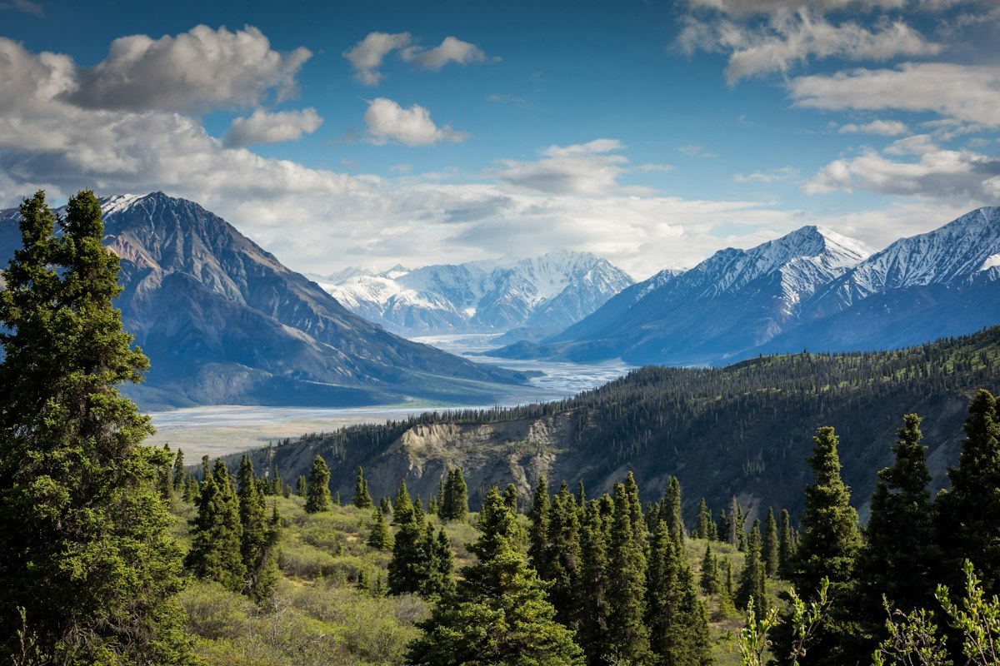
Salida puntual de Ontinyent
Salida con la batería al 100%. Tomamos la CV-81 hacia Villena y enlazamos la A-33 en dirección Jumilla / Murcia, conectando después con la A-91 y A-92N hacia Baza y Guadix.
Parada en Supercharger Guadix (25 min • Café & Baño)
Parada en las instalaciones del Hotel Abades Guadix (A-92 km 294). Conectamos el coche durante 25 minutos. Tiempo perfecto para entrar a la cafetería, ir al servicio con tranquilidad, tomar un buen café, refresco o merienda y estirar las piernas antes de encarar los últimos 45 km de subida a la sierra.
Llegada a Sierra Nevada & Check-in
Instalación en el Airbnb en la zona media-alta de Pradollano. A 400 m del telesilla urbano y 50 m del bus. Sensación inmediata de aire puro alpino y silencio de alta montaña.
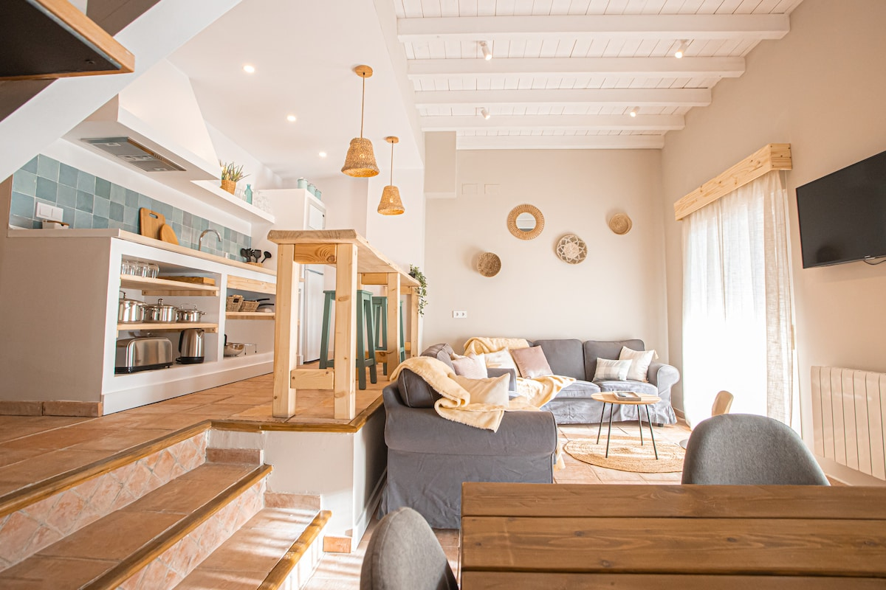
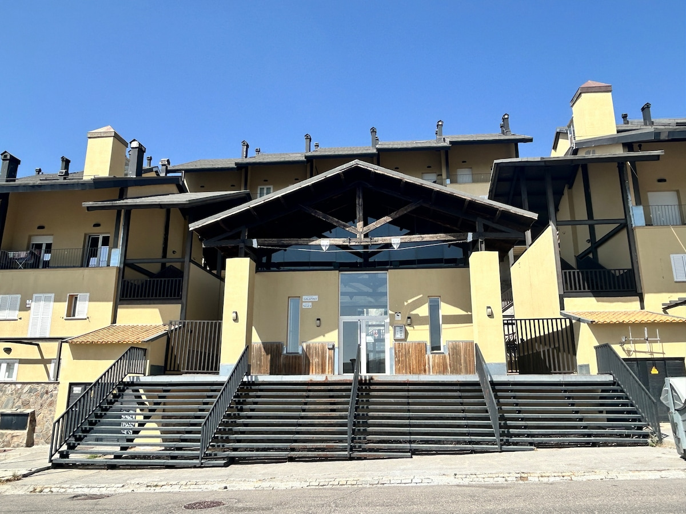
Cena de Llegada: La Muralla Burger (A pie & Económica)
Tras aparcar en el garaje cubierto e instalarnos en el dúplex, salimos a pie a cenar a La Muralla Burger, situada a tan solo 350 m (4 minutos andando por la misma Calle Virgen de las Nieves, en el Edificio Mont Blanc 18).
Es la referencia informal de calidad en Pradollano: hamburguesas elaboradas con 100% picada de buey (proveniente de las carnes selectas de su asador matriz), pan brioche artesano y servidas siempre con abundante ración de patatas fritas caseras.
- Burger Española (15,90 €): 100% picada de buey, queso fundido, jamón ibérico, pimientos verdes fritos y rodajas de tomate natural con patatas caseras.
- Burger Francesa (15,50 €): Picada de buey, crema de foie, cebolla caramelizada, queso Camembert y mayonesa suave de frutos rojos.
- Burger Clásica / Argentina (13,50 €): Picada de buey con bacon crujiente, huevo y queso, o con salsa chimichurri tradicional.
- Para picar al centro: Patatas rancheras con queso cheddar y bacon, nachos Tex-Mex con pulled pork y cañas de cerveza bien frías.
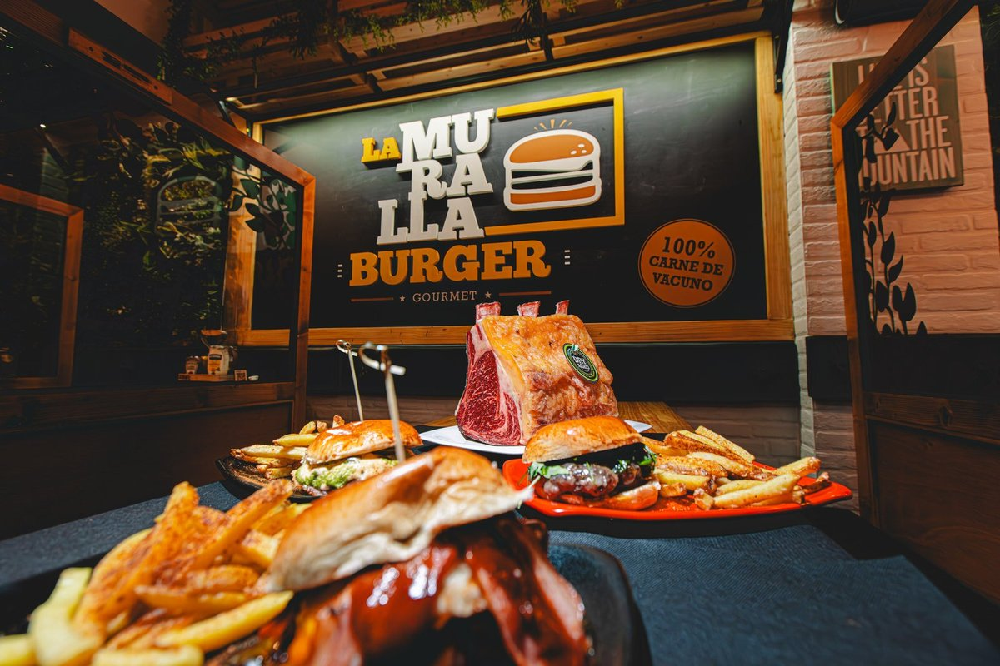
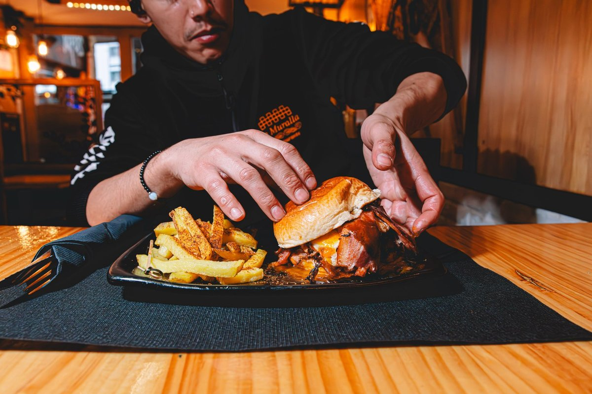
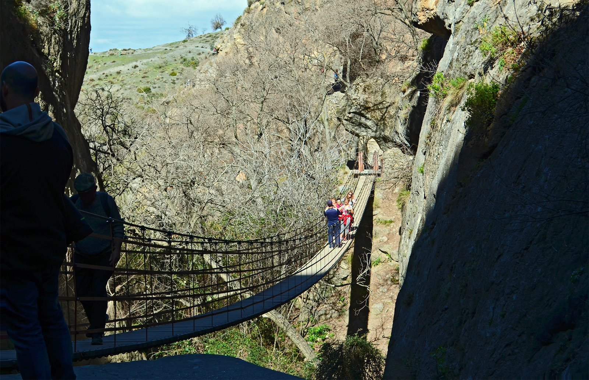
Desayuno Energético de Montaña & Descenso a Monachil
Al llegar el jueves por la noche sin compra previa, el primer desayuno lo tomamos fuera con una previsión aproximada de ~6 a 7 € por persona (cubierto en el bote común). Dos opciones contundentes a elegir sobre la marcha:
- Opción Monachil pueblo (Recomendada a pie de ruta): Bajamos temprano en coche (25 min por la A-395), aparcamos en el parking de la ruta y desayunamos en Bar El Puntarrón o Café Bar La Barbería junto al río. Auténticos molletes de pueblo con tomate, aceite virgen extra, jamón serrano al corte o lomo de orza, zumo natural y café caliente (~6 - 7 €).
- Opción Pradollano: Desayunar en la Plaza de Andalucía (La Bodega o Cafetería Vertical) con tostadas gigantes de pan rústico andaluz antes de subir al coche (~6 - 7 €).
Ruta Senderista de Los Cahorros de Monachil
Una de las rutas más divertidas y espectaculares de Andalucía. Recorremos el desfiladero esculpido por el río Monachil, cruzando puentes colgantes suspendidos sobre el vacío (el más largo mide 63 m), cascadas, pasos de roca caliza donde hay que agacharse agarrados a grapas de hierro y la mítica Cueva de las Palomas.
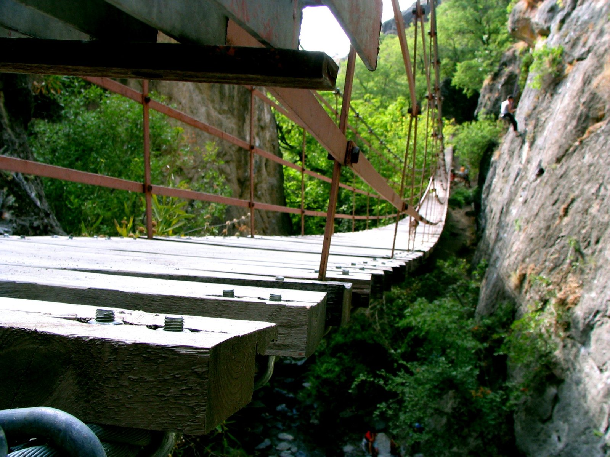
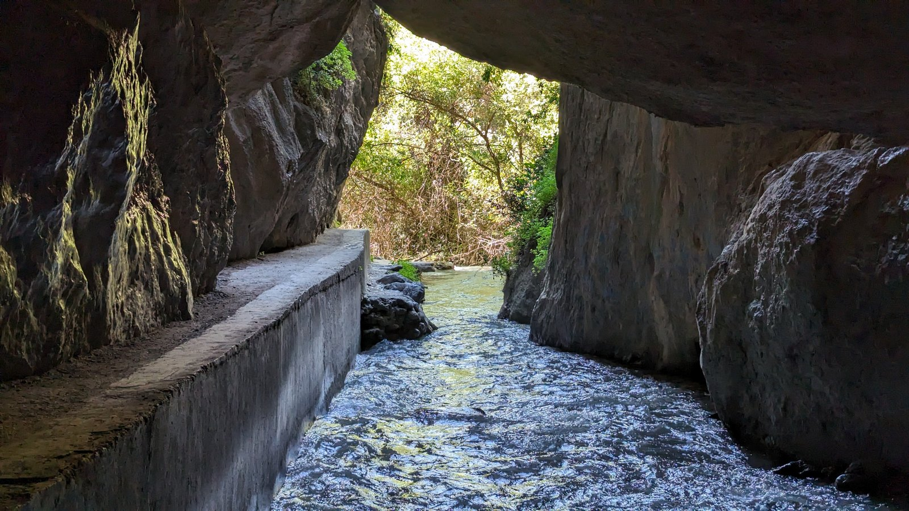
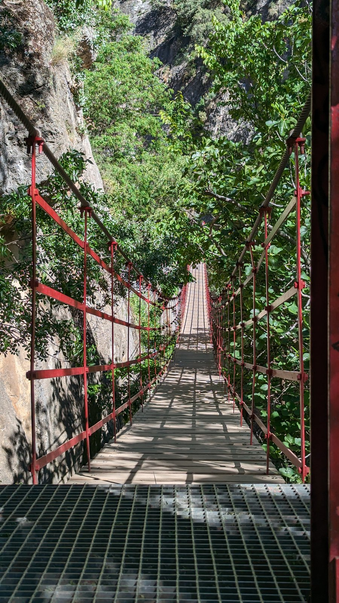
Comida en Monachil: Restaurante Los Cerezos
Justo al terminar la ruta circular de Los Cahorros, tenemos la comida en Restaurante Los Cerezos (Monachil pueblo). Cocina tradicional andaluza de alta calidad: choto al ajillo tradicional, berenjenas fritas con miel de caña, remojón granadino y carnes a la brasa con patatas a lo pobre.
Misión Chuletón & Compra del Picnic: Carnicería Luján & Merca 80
Desde Monachil bajamos en coche solo 10 minutos (6,8 km) directos a Merca 80 (Zaidín), aprovechando la apertura vespertina (17:30 h a 20:30 h). En los puestos 13-14 de Carnicería Luján (Cortijo Luján) y los obradores tradicionales del mercado aprovisionamos el fin de semana:
- 2 Chuletones de Raza Pajuna de Sierra Nevada: Vacuno 100% autóctono criado en semilibertad en las altas cumbres, con una infiltración grasa singular y terneza excepcional. Pedimos corte grueso a 4-5 cm (~1,1 kg/pieza) y envasado al vacío para la gran cena del domingo.
- Viandas para el Picnic del Domingo: Una buena tortilla de patatas casera (o empanada artesana), jamón ibérico cortado a cuchillo, lomo embuchado y pan de hogaza de pueblo de masa madre.
- Quesos de Altura, Vinos D.O. Granada & Sal Maldon: Cuña de queso curado de cabra de Montefrío, botellas de tinto de altura granadino y caja de Sal Maldon en escamas para el trinchado del domingo.
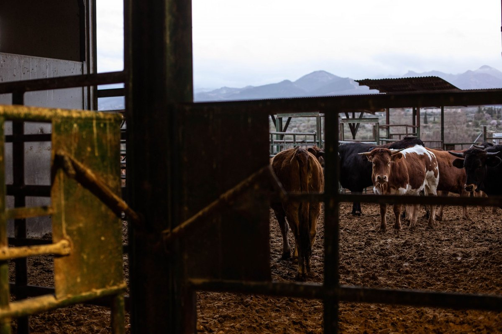
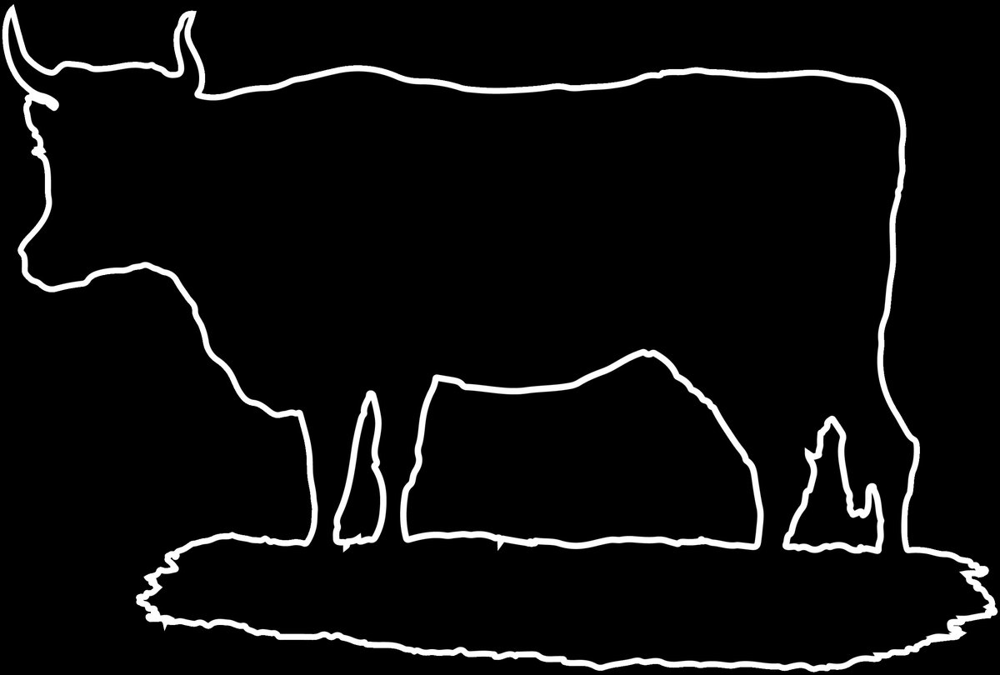
Subida a Pradollano, Covirán Local, Nevera Lista & Ducha Caliente
Desde Merca 80 enlazamos con la Ronda Sur A-395 y subimos directos a Sierra Nevada. En la propia Calle Virgen de las Nieves (a 200 metros del Apartamento Alya) hacemos una parada rápida en el Supermercado Covirán para comprar cervezas frías (Alhambra Reserva 1925 / Especial), refrescos, agua, hielo y todos los suministros para los desayunos en el dúplex (pan de pueblo, tomate triturado, aceite virgen extra, jamón, leche, café, zumos y fruta). Así el sábado por la mañana lo tenemos todo a mano en la cocina nada más despertar (o bajando 2 minutos a por pan recién horneado si apetece). Subida al dúplex, nevera repleta, ducha caliente reconfortante y relax con vistas al atardecer sobre las cumbres.
Cena de Confort: Pizzas Artesanas Take-Away de Tito Luigi & Vinito en el Dúplex
Sin necesidad de vestirnos de gala ni pasar frío en la calle a 2.150 m, bajamos 4 minutos a pie por la Calle Virgen de las Nieves a encargar unas pizzas artesanas en la emblemática Pizzería Tito Luigi (referencia en Pradollano desde 1989).
Subimos las cajas recién horneadas al salón del dúplex para montar un festín distendido y reparador:
- Pizzas al horno de Tito Luigi: Masa fina crujiente, quesos fundidos, rúcula y tomate natural, recién horneadas para compartir al centro del salón.
- Opción Sin Gluten / Celíacos: Disponen de bases especiales de pizza sin gluten y platos de pasta aptos para celíacos. Teléfono para encargar y avisar: +34 958 48 08 82.
- Aperitivo con producto local: Acompañamos con la cuña de queso curado de cabra de Montefrío y jamón de Trevélez comprados esa misma tarde en Merca 80.
- Maridaje: Descorchamos una botella de vino tinto de altura D.O. Granada.
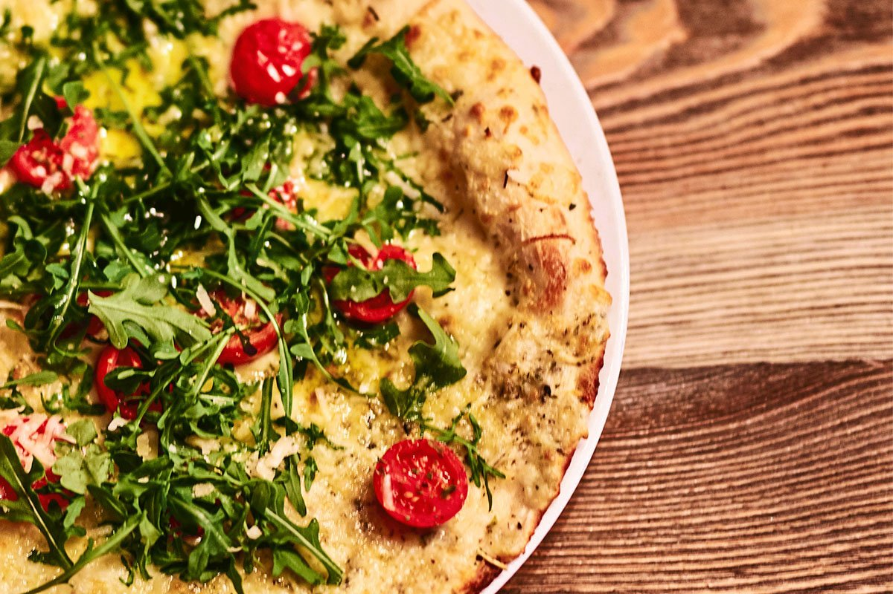
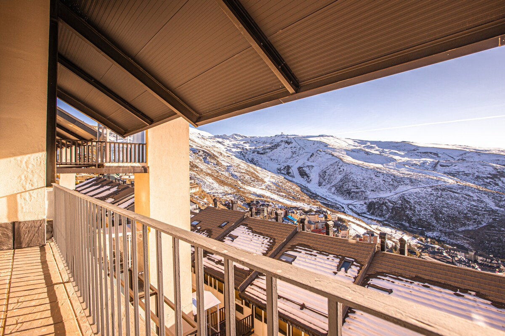
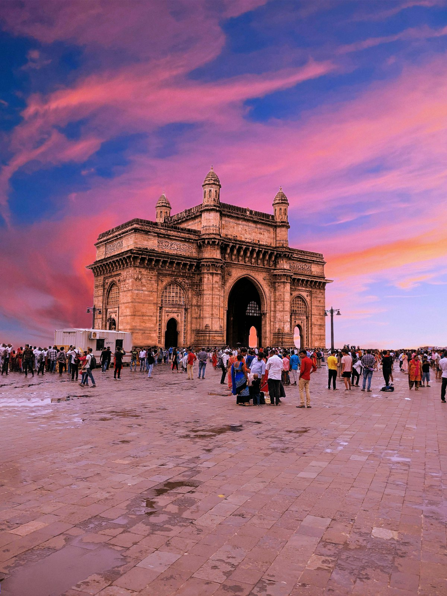
Desayuno Relajado en el Dúplex con Vistas a las Cumbres
Amanecer en Pradollano con calma y sin alarmas estresantes. Desayunamos en el salón contemplando las cumbres con lo comprado el viernes por la tarde en el Supermercado Covirán (a solo 200 m del dúplex, o bajando un momento a por pan recién horneado esa misma mañana): café caliente en la cafetera del apartamento, tostadas de pan rústico con tomate, aceite virgen extra, jamón serrano, zumos y fruta fresca. Cero prisas, ducha relajante y nos vestimos con el look smart casual del día para que el taxi nos recoja a las 11:00 h en la misma puerta.
Descenso en Taxi Oficial: Comodidad Puerta a Puerta
Al tener los chuletones comprados y en la nevera desde el viernes, el sábado nos olvidamos por completo de cargar con el coche. Un taxi oficial nos recoge en la puerta del Apartamento Alya en Pradollano y nos deja directamente en la Puerta de la Justicia de la Alhambra. Cero curvas conduciendo, cero estrés de buscar y pagar parking, y libertad absoluta para disfrutar de cervezas, vermut y vinos.
El Recinto Monumental Libre de la Alhambra
Sin gastar un solo euro en reventas, recorremos todo lo que es de acceso público y 100% gratuito en la colina nazarí:
- Puerta de la Justicia & Puerta del Vino: El majestuoso acceso militar del siglo XIV con su arco de herradura y su laberinto defensivo.
- Palacio de Carlos V: El icónico patio circular renacentista de dos plantas con columnas dóricas y una acústica prodigiosa.
- Museo de la Alhambra: Situado en la planta baja del palacio (gratis para ciudadanos UE), con piezas nazaríes originales, yeserías, capiteles y cerámica andalusí.
- Parador de San Francisco: Antiguo convento donde reposaron los Reyes Católicos. Tomamos un café o aperitivo en su terraza ajardinada con vistas al Secano y las murallas.
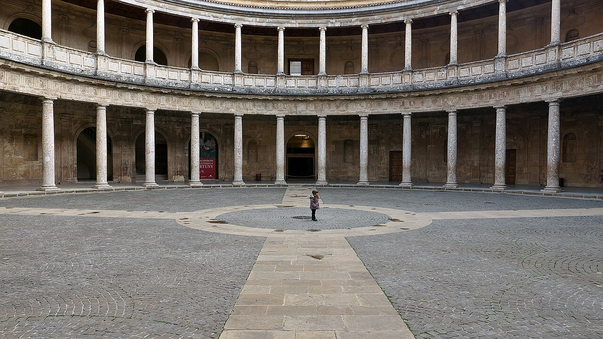
Comida de Tapeo: Bajada a Plaza Nueva & Ruta de Tabernas
Bajamos a pie por el bosque de la Alhambra hacia Plaza Nueva para hacer la comida a base del tapeo más auténtico y emblemático de Granada. En la ciudad cada consumición en barra incluye su tapa caliente recién hecha y abundante, por lo que comemos de categoría saltando de taberna en taberna (~20 €/persona cubiertos en el bote común). Esta es la secuencia cronológica y geográfica perfecta:
Taberna histórica de solera con barricas de roble gigantes hasta el techo y ambiente granadino clásico.
Qué pedir sí o sí: La Tabla Caliente (tostas calientes con sobrasada ibérica y queso fundido, lomo, jamón ibérico y paté artesano).
La catedral del marisco y el pescaíto frito en Granada desde 1942. Barra viva y fritura en aceite limpio servida al segundo.
Qué pedir sí o sí: Fritura de pescaíto al limón (boquerones fritos extra crujientes, chopitos/puntillitas y cazón en adobo) o media ración de gambas fritas.
Taberna minúscula y auténtica oculta en un callejón con azulejos andaluces tradicionales.
Qué pedir sí o sí: Berenjenas fritas con miel de caña (cortadas en láminas ultra finas tipo chips, sin grasa) y sus croquetas caseras.
Si al terminar en Plaza Nueva apetece un toque cárnico antes de iniciar el paseo de tarde.
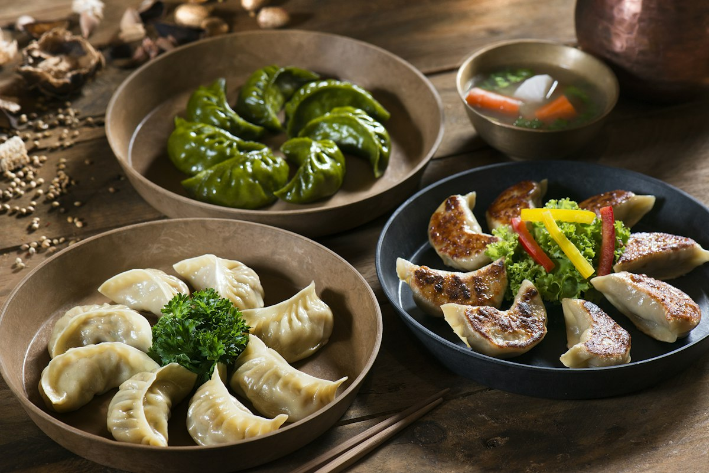
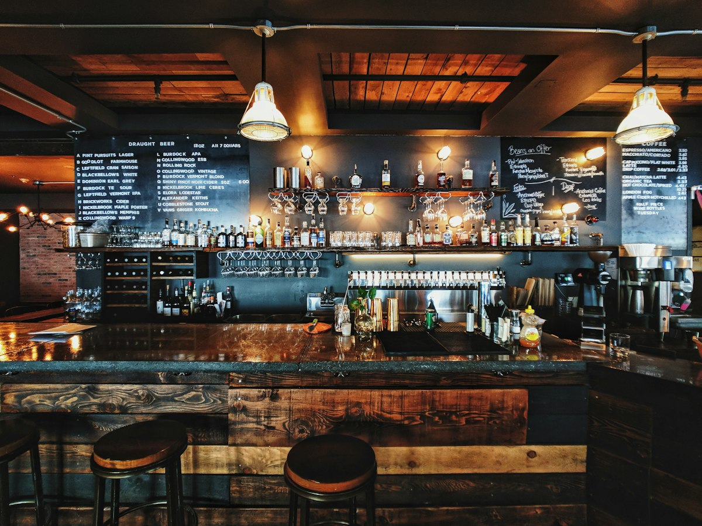
Paseo de los Tristes & Carrera del Darro
Caminamos junto al murmullo del río Darro, con las torres de la Alhambra alzándose sobre el acantilado. Si apetece, subida al Mirador de la Placeta de Carvajales o San Nicolás para contemplar la luz dorada del atardecer.
Ruta de Tardeo & Cócteles al Atardecer
Llega la hora de los combinados y el tardeo granadino. Dos opciones según la preferencia del grupo:
- Opción Rooftop Panorámico: Subir a la azotea B-Heaven (Hotel Barceló Carmen) o al Eurostars Gran Vía. Vistas 360° a la Alhambra y Sierra Nevada, sofás lounge, música chillout y cócteles de autor.
- Opción Realejo & Campo del Príncipe (o Lemon Rock): Disfrutar de copas en las terrazas del bohemio barrio judío o en el patio señorial de Lemon Rock. Ventaja clave: desde el Campo del Príncipe se sube a pie en solo 8 minutos por la Cuesta del Realejo hasta la puerta del restaurante.
La Gran Cena Memorable: Carmen de San Miguel
El cenit gastronómico de la escapada en el Restaurante Carmen de San Miguel (Plaza Torres Bermejas, 3). Mesa confirmada para 4 personas con vistas panorámicas directas a la Alhambra y la ciudad completamente iluminadas. Alta cocina andaluza y maridaje de vinos selectos sin restricciones de conducción.
Noche de Copas & Fiesta: Pub Instante (Ganivet) & Sala Aliatar
Tras la sobremesa, bajamos dando un agradable paseo de solo 8-10 minutos cuesta abajo por la Cuesta del Realejo hasta el epicentro del ocio nocturno en Calle Ángel Ganivet y Puerta Real:
El templo del pop-rock en la calle más selecta del centro. Sesión continua de grandes éxitos de los 80, 90 y 2000 (desde himnos de La Movida hasta clásicos del rock internacional), copas prémium y todo el local cantando a coro con un ambiente adulto inmejorable.
Para cuando el cuerpo pida pista de baile grande: un antiguo cine histórico monumental transformado en macrodiscoteca de dos plantas con palcos, luces espectaculares y sesiones con grandes clásicos y fiesta bailable hasta las 06:00 h.
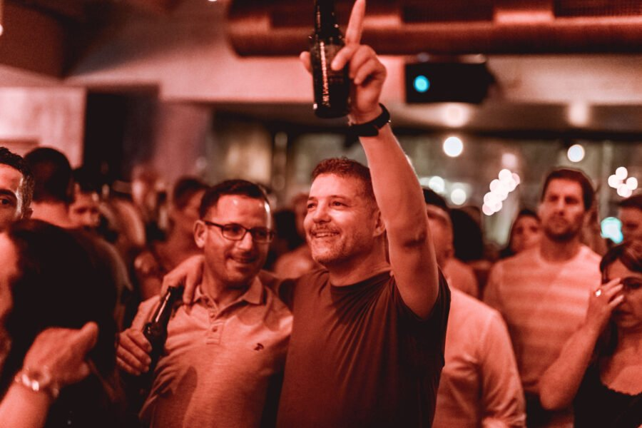
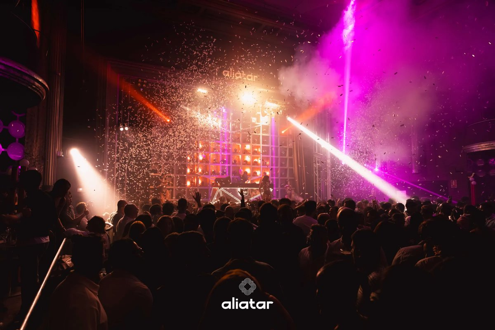
Regreso Flexible en Taxi Oficial 24h a Sierra Nevada
En la misma Puerta Real / Calle Ganivet (a escasos metros de Instante y Aliatar) hay parada permanente de taxis las 24 horas (o a través de la app PideTaxi / +34 958 280 000). Cuando el cuerpo decida retirarse (02:30 h, 04:00 h o cuando queráis), cogemos el taxi oficial que nos sube directos en 35 minutos hasta la misma puerta del Apartamento Alya en Pradollano para descansar plácidamente.
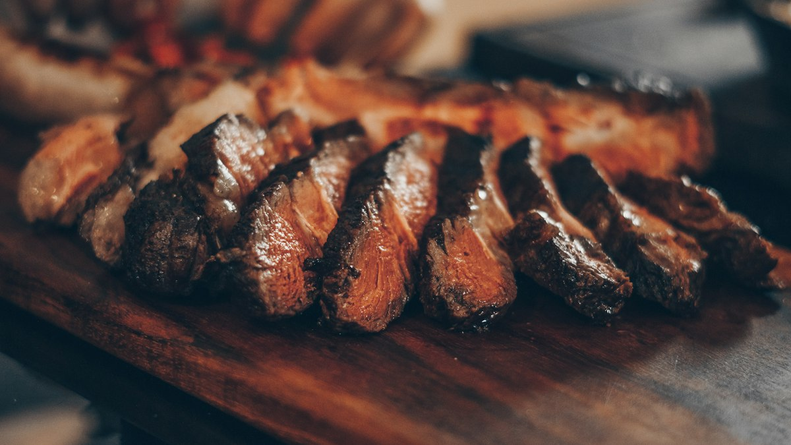
Despertar sin prisas & Preparación de Mochilas de Picnic
Sin alarmas ni horarios estrictos. Ducha caliente reparadora, buen café contemplando las montañas y preparación de las mochilas con el botín gourmet: la tortilla de patatas casera del mercado, los embutidos ibéricos, la hogaza de pan de masa madre, quesos de Montefrío, fruta fresca y las cervezas Alhambra bien frías de la nevera.
Subida Panorámica a Hoya de la Mora (2.500 m)
Subimos en coche solo 5 km (10-12 minutos) por la carretera escénica A-395 hasta la explanada de la Hoya de la Mora (junto al Albergue Universitario), el punto más alto de Europa accesible por carretera asfaltada. Dejamos el coche aparcado y nos ajustamos las botas.
Caminata de Alta Montaña: Senda de la Virgen de las Nieves & Mojón del Trigo
Nos ganamos el picnic con las piernas: una ruta de senderismo suave de 5,2 km ida y vuelta (+160 m de desnivel tendido) por el histórico Camino del Agua. Caminamos bordeando el Barranco de San Juan con vistas imponentes a la cara norte del Pico Veleta (3.398 m).
Alcanzamos el majestuoso monumento pétreo de la Virgen de las Nieves (2.684 m) y la atalaya del Mojón del Trigo (antiguo observatorio astronómico de 1902). El aire helado y 100% puro a casi 2.700 metros reactiva la circulación, llena de oxígeno los pulmones y disuelve cualquier síntoma de resaca de la noche anterior.
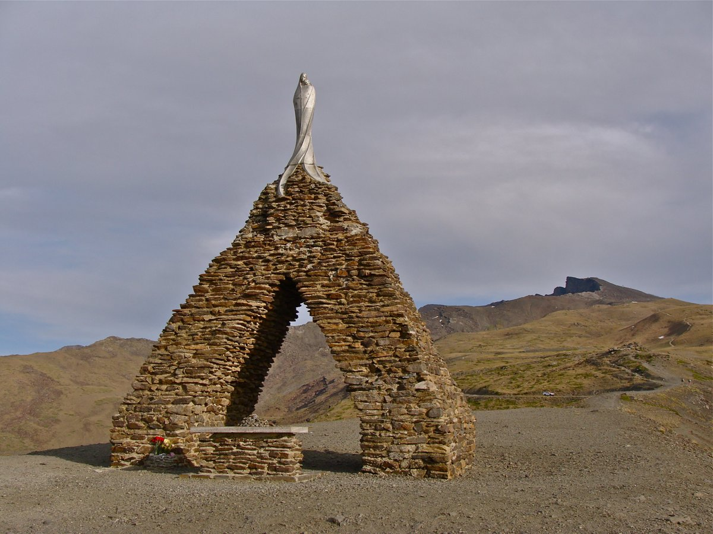
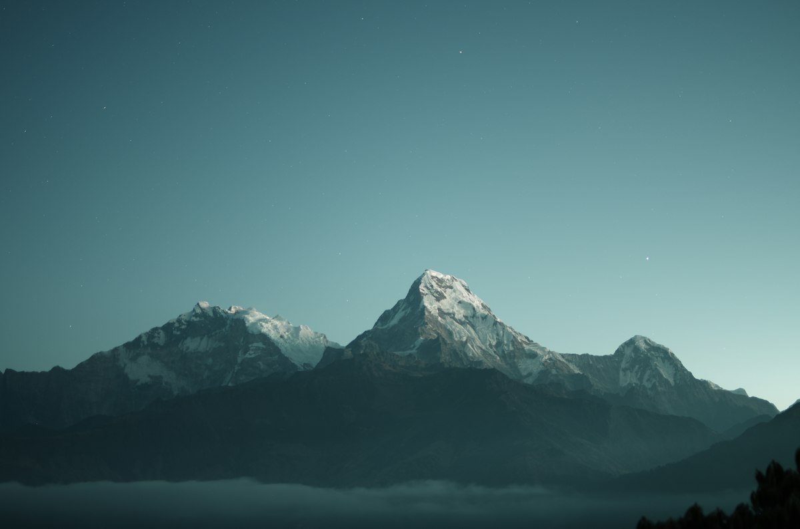
El Gran Picnic Alpino al Sol & Sobremesa frente a las Cumbres
La mejor recompensa de la montaña: extendemos mantas en una terraza natural de hierba y roca al abrigo del viento, con el sol de mediodía de cara y panorámica abierta a toda la cordillera.
- El banquete alpino: Cervezas heladas (Alhambra Reserva), tortilla de patatas casera, jamón ibérico con hogaza de pueblo crujiente, queso de cabra curado de Montefrío y fruta fresca hidratante.
- Sobremesa en silencio absoluto: Media hora tumbados al sol en la pradera respirando tranquilidad total antes de iniciar el descenso suave de 20 minutos de vuelta al coche.
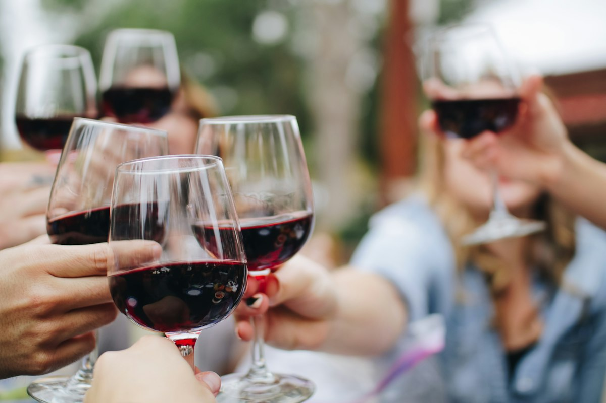
Regreso al Dúplex, Gran Siesta Reparadora & Tarde de Juegos
Regreso en coche al Apartamento Alya en Pradollano. Ducha reconfortante, ropa cómoda de estar por casa y una generosa siesta reparadora en el silencio de la montaña.
A media tarde, café caliente, música ambiente y sesión distendida de cartas o juegos de mesa. A las 18:30 h sacamos los chuletones de la nevera para que se atemperen a temperatura ambiente durante dos horas antes del cocinado.
La Gran Liturgia del Chuletón & Noche de Historias
El plan estelar para disfrutar del dúplex con tranquilidad: calefacción encendida, balcón abierto a las montañas nocturnas, buena música y la liturgia gastronómica de la carne prémium traída de Carnicería Luján:
- Atemperado previo (18:30 h): Sacamos los chuletones de la nevera 2 horas antes para que el interior alcance la temperatura ambiente y no quede frío al sellarse.
- Plancha de hierro fundido de casa & Fuego vivo: Clave del éxito: llevamos de casa en el coche una plancha de hierro fundido (apta para vitrocerámica), ya que las sartenes de apartamento pierden calor y cuecen la carne. Secamos la superficie con papel de cocina y calentamos la plancha de hierro al máximo untada con un recorte de la propia grasa exterior del chuletón.
- Sellado Maillard (3-4 min por cara): Fuerte choque térmico gracias a la inercia térmica del hierro para lograr una costra dorada crujiente y caramelizada, manteniendo el centro jugoso, tierno y sonrosado.
- Reposo & Trinchado: 5 minutos de reposo sobre tabla de madera para que los jugos se redistribuyan. Trinchamos en tiras oblicuas (*tagliata*) y rematamos con lluvia generosa de Sal Maldon en escamas.
- Maridaje & Sobremesa: Descorchamos los tintos de altura D.O. Granada, abrimos la tabla de quesos de Montefrío y cecina, y disfrutamos de horas de anécdotas, risas y sobremesa distendida en el salón.
Check-out sin prisas en Apartamento Alya
Desayuno alpino tranquilo, recogida de equipaje y check-out a las 11:45 h. Salimos de Pradollano y descendemos hacia la autovía A-92N en dirección Murcia/Alicante.
Carga & Comida Tradicional: Supercharger Venta del Peral (50 min)
A la 13:15 h (tras 135 km de ruta) llegamos en hora punta de comida al Supercharger de Cúllar / Venta del Peral (A-92N km 58). Conectamos el coche para una parada de 45 a 50 minutos y entramos a comer al Restaurante Asador Venta del Peral: comida tradicional casera, carnes a la brasa, asados y platos de cuchara. Comemos sentados y relajados mientras el coche se carga al 90% sin perder un solo minuto de tiempo.
Tramo final directo hacia Ontinyent
Salimos con el coche cargado y la comida hecha para los últimos 215 km por la A-92N, Puerto Lumbreras y la A-33. Llegada a Ontinyent sobre las 17:00 h, con tiempo perfecto para deshacer maletas y descansar.
Alojamiento
Dúplex Alya en Edificio Mont Blanc 18: 90 m² para 4 personas con 2 dormitorios, 2 baños y garaje privado. Reserva confirmada y 100% abonada entre los 4 (450 € en total, sin pagos pendientes de estancia).
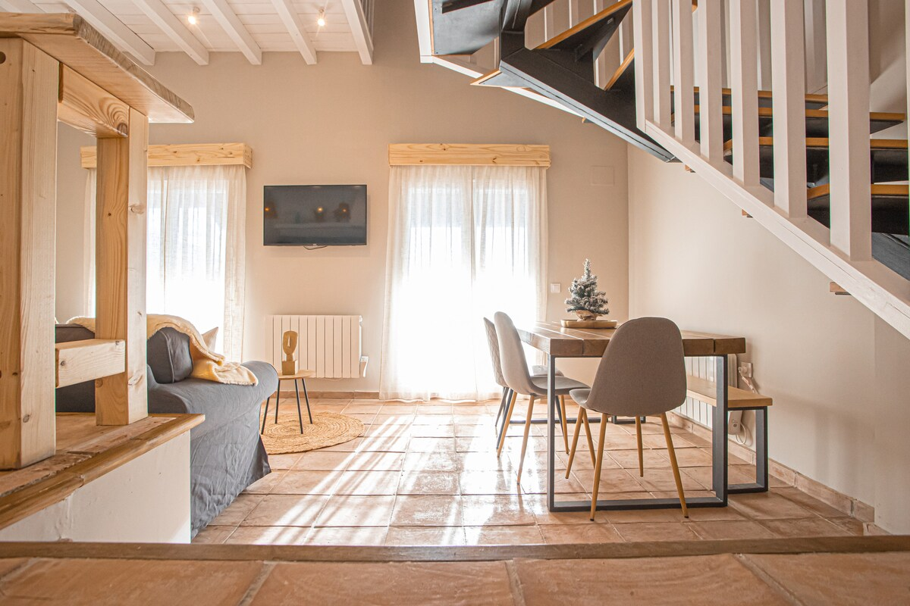
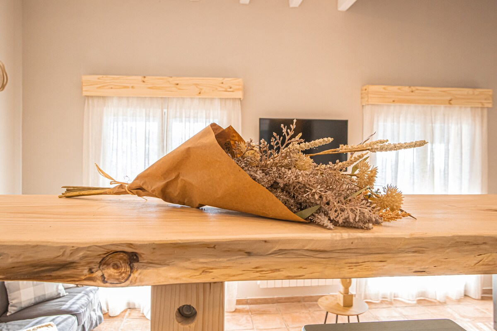
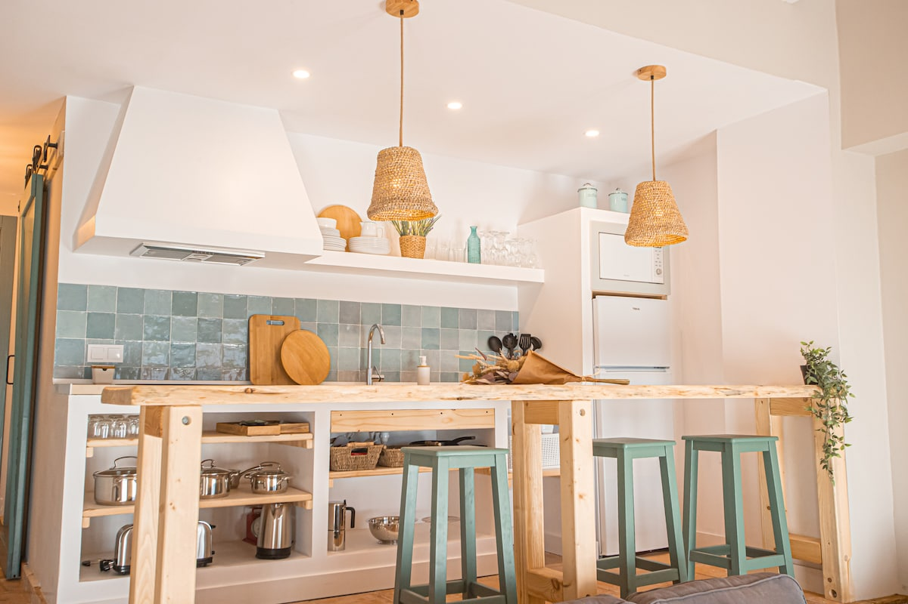
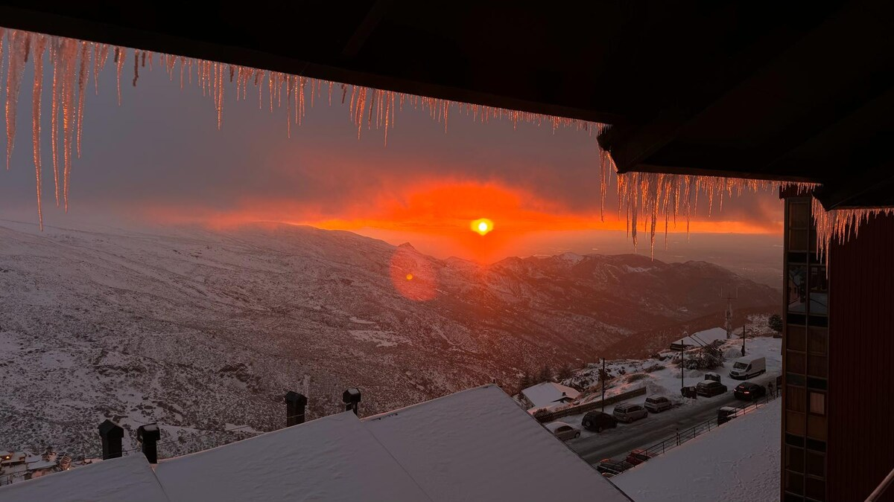
Dúplex Alya (Edificio Mont Blanc 18)
Dúplex de 90 m² reformado íntegramente en 2022 con vistas panorámicas a la montaña y balcón exterior soleado. Cuenta con 2 habitaciones independientes, 2 baños completos, salón luminoso con Smart TV, cocina totalmente equipada y Wi-Fi de alta velocidad.
Ver anuncio oficial en AirbnbPresupuesto
Control económico transparente agrupado por jornadas: fondo común estimado en ~340 € por persona para cubrir el 100% de comidas, cenas, tapeo, copas, discoteca, taxi oficial de Granada I/V y compras, con el alojamiento ya liquidado.
Salida & Primera Cena de Llegada
Desfiladero de Los Cahorros & Montaña
Granada Monumental, Tardeo, Gala & Fiesta
Alta Cumbre Veleta & Noche de Chuletón
Despedida de Pradollano & Regreso a Valencia
Desayunos en el Apartamento & Fondo Nevera Covirán
Alojamiento Base: Dúplex Alya (Pradollano)
Alojamiento ya abonado y tranquilidad financiera: El apartamento Dúplex Alya ya está íntegramente pagado (450 € en total entre los 4, es decir 112,50 € por persona). Por lo tanto, lo único pendiente de aportar son ~340 € por persona para el fondo común de viaje.
Gestión ágil con Bote Común: Crearemos un grupo de Tricount o fondo Bizum al salir el jueves aportando ~340 € por persona. Así queda cubierto el 100% de la experiencia: desayuno de montaña del viernes (El Puntarrón o La Bodega), burgers gourmet en ruta, restaurantes de montaña, pizzas artesanas, comida de tapeo histórico, tardeo en rooftop, cena de gala en Carmen de San Miguel, noche de fiesta con primera copa en Pub Instante y entrada con consumición en Sala Aliatar, taxi oficial puerta a puerta de ida y regreso de madrugada a Pradollano, compras de mercado, picnic alpino en el Veleta, desayunos y cervezas frías para la nevera del dúplex y la gran liturgia del chuletón madurado sin tener que andar dividiendo tickets en cada parada.
Reservas
Checklist cronológico en tiempo real de cada mesa en restaurantes, transportes oficiales, visitas a monumentos y compras gourmet de jueves a lunes para que todo esté perfectamente coordinado.
Llegada a Pradollano & Primera Cena
Alojamiento Base: Dúplex Alya (4 Noches + Garaje)
Jueves 8 al Lunes 12 de Octubre • Check-in 19:30 h. Apartamento dúplex de 90 m² para 4 personas con 2 dormitorios, 2 baños completos y plaza de garaje privada en Edificio Mont Blanc 18 (Pradollano, 2.150 m).
Estado financiero: 450 € íntegramente pagados entre los 4 (112,50 €/persona ya abonados). Totalmente liquidado antes del viaje.
Cena Jueves 8: La Muralla Burger (Pradollano)
Jueves 8 de Octubre • 21:45 h. Cena informal de llegada a 350 m a pie del apartamento dúplex (Edificio Mont Blanc 18). Hamburguesas gourmet 100% picada de buey, patatas caseras, entrantes tex-mex y cañas frías. No requiere reserva formal; acceso directo según llegada.
Desfiladero de Los Cahorros & Gastronomía
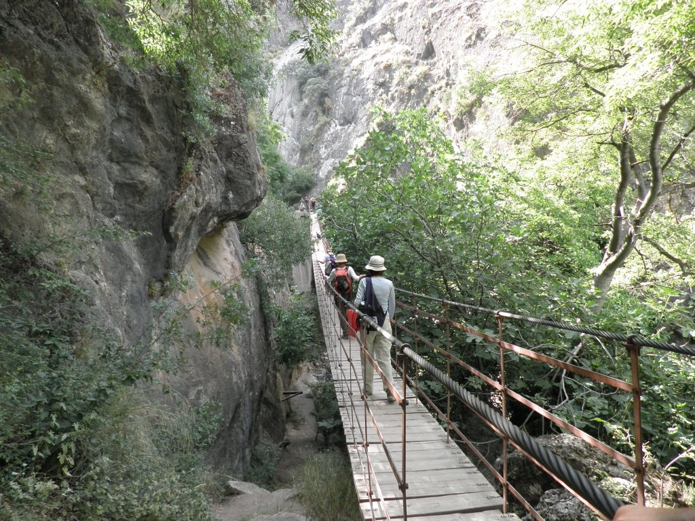
Ruta Senderismo: Los Cahorros & Puentes Colgantes
Viernes 9 de Octubre • 10:00 h a 14:00 h. Ruta circular de 9,5 km junto al cauce del río Monachil. Cruce de puentes colgantes históricos, paso por la Cueva de las Palomas y desfiladeros kársticos de postal.
Comida Viernes 9: Restaurante Los Cerezos (Monachil)
Viernes 9 de Octubre • 14:30 h. Mesa para 4 personas confirmada en la terraza exterior con vistas panorámicas, justo al concluir la ruta circular de Los Cahorros. Cocina tradicional andaluza, choto al ajillo y carnes a la brasa.
Chuletón: Carnicería Luján (Cortijo Luján) — Merca 80
Viernes 9 de Octubre • 17:30 h. Al terminar la comida en Los Cerezos (Monachil), bajamos en coche en solo 10 minutos (6,8 km) a Merca 80 en el Zaidín (puestos 13-14), aprovechando su apertura vespertina (17:30 h a 20:30 h).
El producto estrella: Familia pionera en criar la auténtica Vaca Pajuna de Sierra Nevada (raza endémica criada en semilibertad en las altas cumbres granadinas). Compramos 2 chuletones de ~1,1 kg a 4-5 cm de grosor al vacío y los dejamos en la nevera del apartamento esa misma tarde.
Clave de equipaje & cocina: Traer en el maletero del coche una plancha de hierro fundido de casa (apta para vitrocerámica) para asegurar calor abrasador constante sin enfriar la base, y una caja de Sal Maldon en escamas para el trinchado final.
Cena Viernes 9: Pizzas Tito Luigi & Vino en el Dúplex
Viernes 9 de Octubre • 21:15 h. Encargo para llevar a 400 m a pie en Calle Virgen de las Nieves. Pizzas artesanas al horno recién hechas para subir calientes al salón del apartamento y disfrutar con la tabla de queso de Montefrío y vino tinto D.O. Granada.
Granada Monumental, Tardeo, Gala & Noche de Fiesta
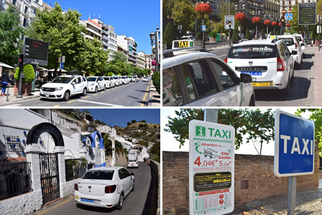
Transporte Sábado 10: Taxi Oficial Puerta a Puerta (I/V)
Sábado 10 de Octubre • Ida 11:00 h / Vuelta de Madrugada (03:30 h). Taxi oficial con recogida en la puerta del Apartamento Alya (Pradollano) directo a la Alhambra, y recogida de madrugada en Plaza del Campillo / Ganivet tras salir de Sala Aliatar.
Ventaja total: Cero curvas de noche, cero coste ni problemas de aparcamiento y libertad absoluta para disfrutar de cervezas en el tapeo, cócteles de tardeo, maridaje de vinos en Carmen de San Miguel y copas de fiesta sin preocupaciones. Presupuestado en el bote común (35 €/persona ida y vuelta completa, 140 € grupo).
Alhambra Libre & Puertas Monumentales
Sábado 10 de Octubre • 11:30 h a 13:30 h. No requiere entrada ni reserva previa. El acceso al Palacio de Carlos V, Museo de Bellas Artes, Puerta de la Justicia, Puerta del Vino y jardines del Parador es público, libre y 100% gratuito.
Comida Sábado 10: Ruta de Tapeo Histórico (Centro Granada)
Sábado 10 de Octubre • 13:45 h a 16:30 h. Bajada a pie desde la Alhambra hacia Plaza Nueva. Secuencia de tabernas con solera: Bodegas Castañeda (tabla caliente y calicasas), Bar Los Diamantes (pescaíto frito recién tirado) y Casa Julio (berenjenas con miel de caña). En Granada cada consumición incluye su tapa caliente generosa.
Tardeo Sábado 10: Rooftop B-Heaven o Terrazas del Realejo
Sábado 10 de Octubre • 18:00 h a 20:15 h. Dos opciones perfectas: azotea panorámica 360° en B-Heaven (Barceló Carmen) o copas en las terrazas del Campo del Príncipe (El Realejo). Desde el Realejo se sube a pie en apenas 8 minutos por la Cuesta del Realejo a la cena de Carmen de San Miguel.
Consultar Hotel Barceló Carmen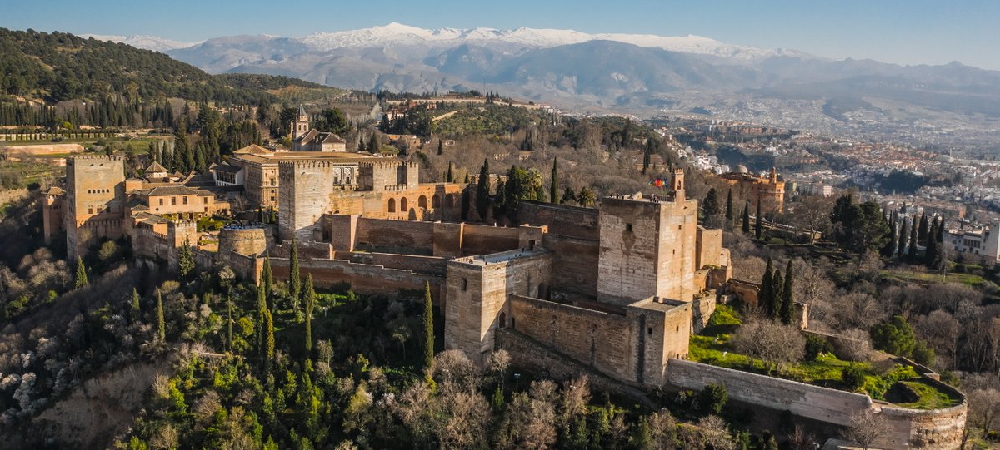
Cena Sábado 10: Restaurante Carmen de San Miguel
Sábado 10 de Octubre • 20:30 h (4 personas). Mesa confirmada para 4 comensales con vistas directas a la Alhambra y la ciudad totalmente iluminadas. Alta gastronomía andaluza, bodega selecta y marco incomparable para la gran noche en Granada.
Noche de Fiesta: Copas Ganivet & Sala Aliatar
Sábado 10 de Octubre • 23:45 h a 03:30 h. Tras la sobremesa en Carmen de San Miguel, bajada en paseo nocturno (10 min) a Plaza del Campillo y Calle Ángel Ganivet. Primera ronda en Pub Instante (Ganivet 9, acceso libre) y continuación en la mítica Sala Aliatar (Calle Recogidas 2), antiguo cine histórico convertido en club de referencia.
Entradas y consumiciones: Acceso a Sala Aliatar con copa incluida (~12-15 € en taquilla) y primera copa en Pub Instante (~8-10 €), presupuestado íntegramente en el bote común (30 €/persona, 120 € total grupo).
Alta Cumbre Veleta & Noche de Chuletón
Picnic Domingo 11: Virgen de las Nieves (Veleta)
Domingo 11 de Octubre • 13:30 h a 15:30 h. Subida en coche hasta Hoya de la Mora (2.550 m). Picnic panorámico al pie de las altas cumbres con pan rústico, tortilla casera de patatas, embutidos ibéricos y cervezas frías en plena naturaleza alpina.
Cena Domingo 11: Gran Liturgia Chuletón & Bodega Dúplex
Domingo 11 de Octubre • 21:00 h. La velada gastronómica reina del viaje en el salón del Dúplex Alya. Marcado y sellado de los chuletones de Vaca Pajuna de Cortijo Luján en la plancha de hierro fundido, trinchado con sal Maldon en escamas y maridaje de vinos tintos selectos.
Despedida de Pradollano & Regreso a Valencia
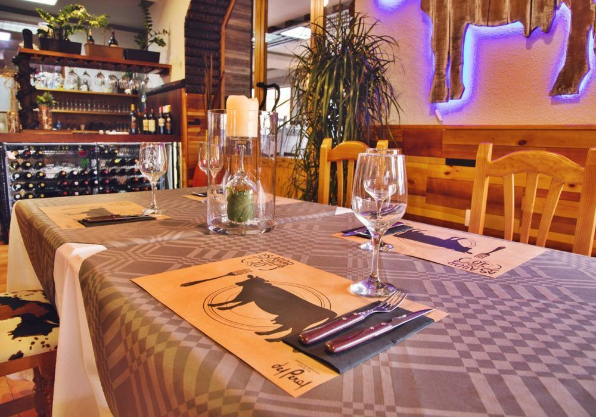
Comida Lunes 12: Asador Venta del Peral (Baza - A-92N)
Lunes 12 de Octubre • 13:30 h. Descenso de Pradollano y parada gastronómica en el restaurante asador tradicional de Venta del Peral (A-92N, Baza) sincronizada con la parada de carga antes del tramo final de carretera a Valencia.